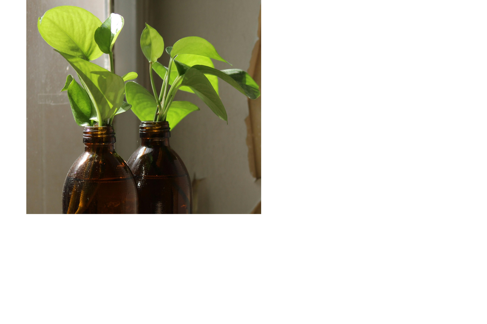
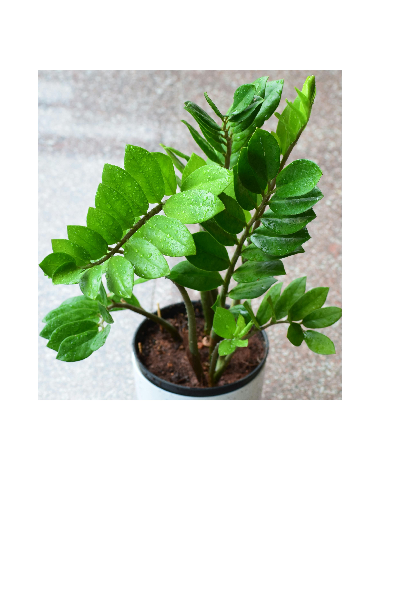
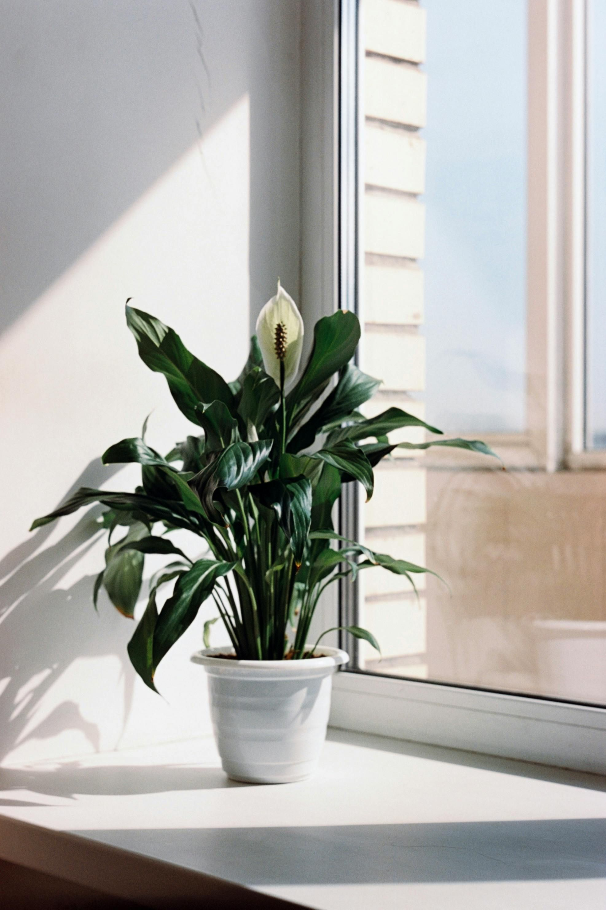
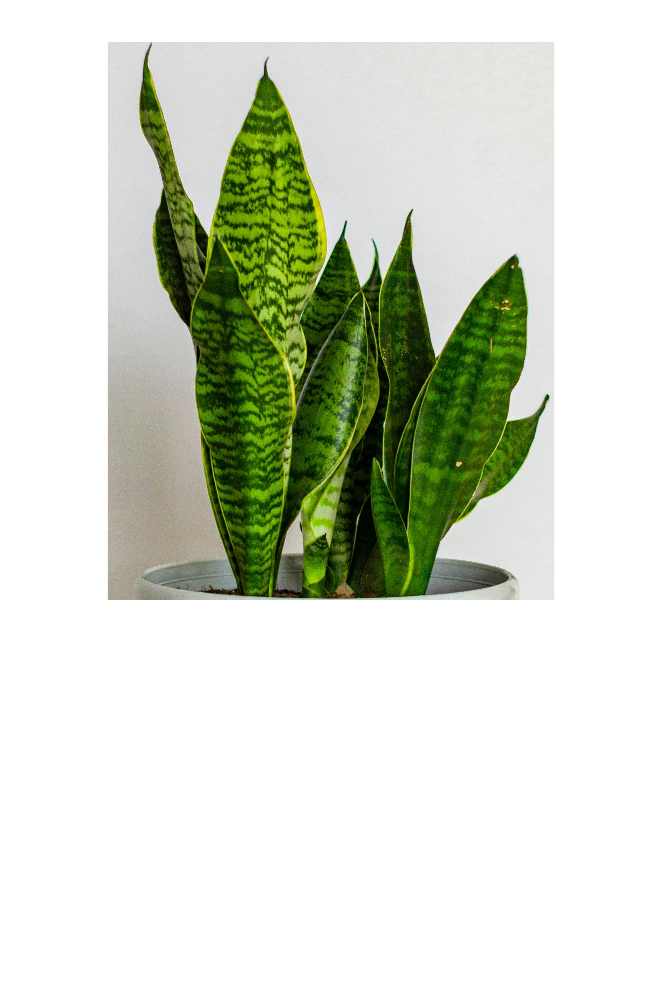
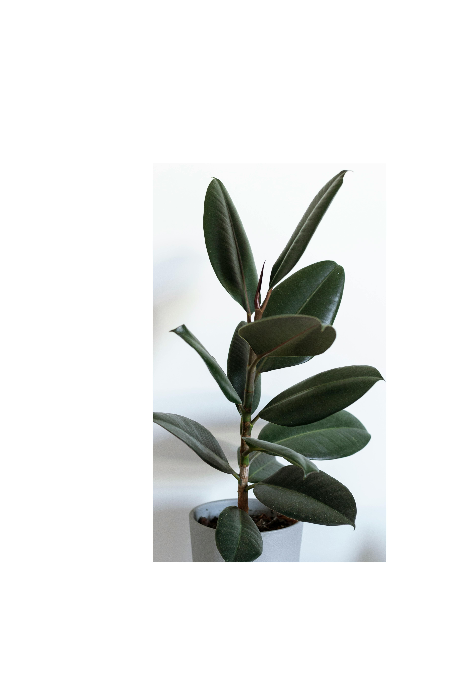

Jättipeikonlehti Monstera, tuo viidakkomaisen tunnelman ja sisätiloissa kookos tukikepillä kasvi viihtyy eniten runsaassa valossa.

Kultaköynnös epipremnum, kasvaa silmäräpäyksessä, sopii kaikkialle, tykkää varjosta sekä valosta. Löytyy useita eri muotoisia ja värisiä.

Palmuvehka zamioculcas, viihtyy varjossa ja auringossa sekä toimii hyödyllisenä kasvina sillä se suodattaa ilmaa muita viherkasveja nopeammin. Jos haluaa raikastaa tunnelmaa kylpyhuoneessa tämä kasvi on oikea valinta.

Viirivehka tai spathiphyllum, tuottaa valkoisia pieniä kukkia ja tykkää puolivarjosta. Viirivehka on muihin vähän erikoisempi sillä se tykkää näyttää milloin se tarvii kastelua laskemalla lehtiä alaspäin. Kastelun jälkeen noin 3-6 tunnin jälkeen kaikki lehdet ovat taas pystyssä.

Anopinkieli tai sansiviera trifasciata, laikukas kasvi joka kasvaa melko korkeaksi ja painavaksi sekä elää pitkään. Tieditkö että anopinkieli on aktiivisimmillaan öisin. Se tuottaa happea ja poistaa ilmasta hiilidioksidia. Isoanopinkieli kykenee poistamaan kemiallisia kaasuja huoneilmasta jonkin verran eli sillä on myös kyky puhdistaa ilmaa.

Kumipuu tai ficus, kasvi joka on alunperin Itä-Intiasta kotoisin tykkää paljon valosta ja luo näyttävän pikkupuun huoneeseen. Nimi on myös kasvin mukainen sillä siitä saa tuotettua raakakumia.